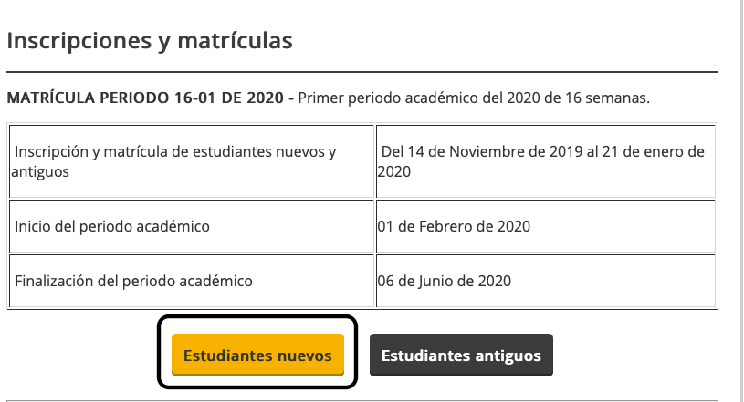
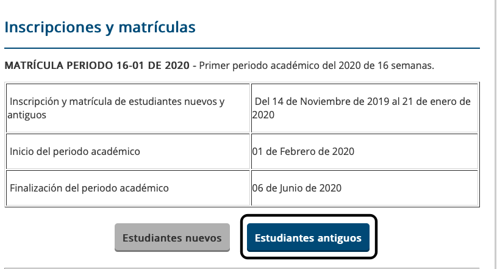

UNAD - ingresa y se parte de esta familia

Si eres estudiante nuevo, debes ingresar donde estudiantes nuevos, como aparece resaltado en la siguiente imagen
Si eres estudiante antiguo, debes ingresar donde estudiantes antiguos, como aparece resaltado en la siguiente imagen
Para matricularte en la UNAD, da click en la siguiente imagen